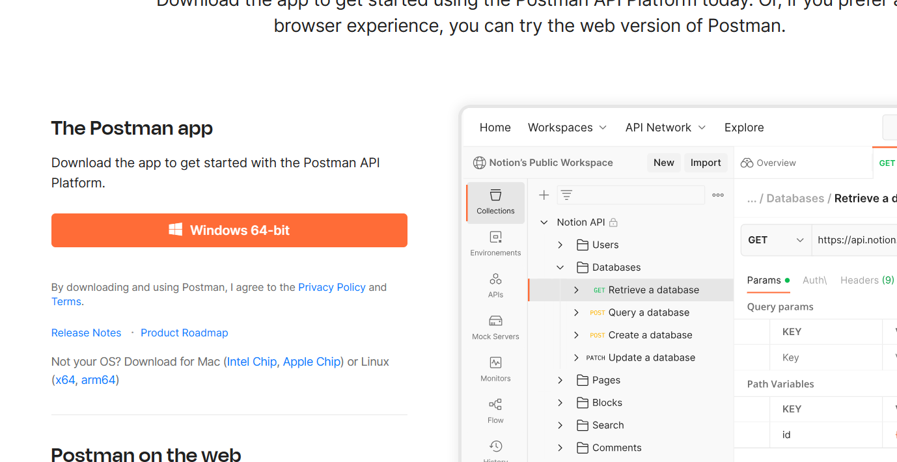

Java中自带了net库，里面提供了一些socket API，因此可以通过调用这些API来实现网络之间的传输。
与C++中的网络编程不同，Java中许多需要执行的步骤都被封装在了一些函数中，省去了WSAStartUp和bind、listen等步骤，因此比C++更简洁。
网络编程需要一端作为服务器，一端作为客户端，来进行通信。
接下来以"客户端传输一串字符串,服务器将字符串每个字母变成大写并返回服务器"的关系为例.
通常，socket API都被存放在java.net中，而网络信息的传输则需要java.io包。因此我们需要使用以下代码导入这两个包
1 2 import java.io.*; import java.net.*;
TCP是一个面向连接的协议，因此需要使用accept函数来接收客户端的连接请求。
首先是服务器端。由于与网络操作相关的代码都具有某种不确定性,因此必须将所有的代码放入try/catch语句块中. catch中需要捕获的是IOException.
我们需要先创建一个属于服务器的套接字ServerSocket，来创建一个与客户端的连接。使用ServerSocket serverSocket = new ServerSocket(6666);来创建一个ServerSocket实例。其中的参数需要填入服务器端的端口号，可以是0~65535中的一个数，这里使用6666。
之后由于服务器是需要不停运作的，我们在里面进行无限循环while(true).
在循环体中先使用accept函数,需要创建一个新的普通socket来接收这个新接收的套接字,即Socket socket = serverSocket.accept();. 以后对套接字中数据的操作都使用这个socket.
为了读取数据,我们需要使用一个用来读取数据的对象, 即BufferedReader. 我们可以为输入的参数提供套接字的输入流.BufferedReader reader = new BufferedReader(new InputStreamReader(socket.getInputStream()));
然后调用reader.readLine();接收一行的数据, 并且作为返回值存放在一个字符串中.
对字符串处理完后(这里就是调用toUpperCase将字符串中的每个字母变为大写), 我们可以创建一个输出流, 在构造函数中填入套接字的输出流, 这样子在输出时就可以输出到套接字中, 被客户端接收 DataOutputStream ostream = new DataOutputStream(socket.getOutputStream());
之后调用ostream中的writebytes方法, 将字符串作为参数传入,这样客户端就可以收到这个字符串了. 注意：在writebytes传入字符串时，他会一直读取直到一行结束，因此必须在字符串末尾添加一个换行符\n ，不然的话它读取是不会停下的
接下来我们就可以来到客户端部分
刚开始也一样，先将代码写入try/catch部分中，然后创建一个套接字socket（注意这里并不是原先的ServerSocket，而是普通的socket），只不过创建的时候就需要在参数中填入具体的IP地址和端口号了（是服务器的IP地址和端口号）。端口号的表示可以使用一个InetAddress类，如果服务器也是在本机上，那么就可以把服务器IP地址看成设为127.0.0.1，可以用InetAddress.getByName(“127.0.0.1”)来表示这个IP地址。第二个参数只需填入和服务器的ServerSocket相同的端口号，这里是6666.
在创建完这个Socket的时候应该就和服务器自动连接好了。这个时候只需写入数据就行，流程与服务器端一样，使用DataOutputStream输出流来输出数据，使用BufferedReader来接收数据，在输出字符串时需要先添加换行符等等。
以下是服务器端和客户端的示例代码：
1 2 3 4 5 6 7 8 9 10 11 12 13 14 15 16 17 18 19 20 21 22 23 24 25 26 27 28 29 30 31 32 33 34 35 36 37 38 39 40 41 42 43 //服务器端 import java.io.*; import java.net.*; import java.util.Scanner; public class ServerSocketTest { public static void main(String[] args) { try { //先创建一个服务器套接字 ServerSocket serverSocket = new ServerSocket(6666); while(true) { Socket socket = serverSocket.accept(); System.out.println("成功连接"); //现在应该已经侦听到了 //定义一个用来从输入流接收数据的reader,里面的输入流使用serversocket中的输入流（接收客户端输出流中的内容） BufferedReader reader = new BufferedReader(new InputStreamReader(socket.getInputStream())); //从reader中读出数据 String strFromIn = reader.readLine(); System.out.println("成功读取数据"); //对写入的字符串进行处理 strFromIn = strFromIn.toUpperCase(); //获取当前套接字的输出流（里面的内容会被传输给对方的输入流） DataOutputStream ostream = new DataOutputStream(socket.getOutputStream()); //向输出流中输出处理过的字符串 ostream.writeBytes(strFromIn+"\n"); System.out.println("成功写入数据"); socket.close(); } //开始侦听，并用一个新的套接字接收侦听到的套接字 } catch (IOException e) { e.printStackTrace(); } } }
1 2 3 4 5 6 7 8 9 10 11 12 13 14 15 16 17 18 19 20 21 22 23 24 25 26 27 28 29 30 31 //客户端 import java.io.*; import java.net.*; import java.util.Date; public class ClientSocketTest { public static void main(String[] args) { try { //创建一个客户端套接字，并提供关于服务器端的信息的构造函数参数。第一个参数表示服务器端的地址，第二个参数表示端口号 Socket socket = new Socket(InetAddress.getByName("127.0.0.1"),6666); //获取到当前本套接字的输出流（里面的内容会被传输给对方的输入流） DataOutputStream ostream = new DataOutputStream(socket.getOutputStream()); //定义一个用来输出的字符串并将其写入输出流，如果是输出字节流就调用write函数，如果是字符串就调用writeBytes函数 String strToOut = "abcde"; ostream.writeBytes(strToOut+"\n"); System.out.println("成功写入数据"); ///定义一个用来从输入流接收数据的reader,里面的输入流使用socket中的输入流（接收服务器输出流中的内容） BufferedReader reader = new BufferedReader(new InputStreamReader(socket.getInputStream())); //获取输入流中的数据 String result = reader.readLine(); //打印 System.out.println(result); socket.close(); }catch (IOException e) { e.printStackTrace(); } } }
运行时需要先启动服务器端的进程，然后启动客户端的进程。
UDP端与TCP端不同的是UDP端不需要建立连接就可以通信，也因此它的数据是以分组的数据包的形式发送的，对数据的处理会更加麻烦。
首先来到服务器端。与TCP一样，需要将代码写入try和catch语句块中。我们先要创建的是一个DatagramSocket，在参数中需要填入这一段的端口号，我们还是使用6666. DatagramSocket datagramSocket = new DatagramSocket(6666);
由于我们发送和接收数据使用的都是数据包，因此我们需要先创建一个packet。报文中需要的是一个字节数组，因此我们需要先创建一个大小的字节数组，并将其作为参数传递到packet的构造函数中。byte[] b = new byte[10];
正是使用了数据包，我们也不需要使用输入流和输出流来接收和获得数据。我们可以直接调用socket的receive函数将接收到的报文传递给参数的packet中。datagramSocket.receive(packet);
之后想要从报文中提取数据，就可以调用报文提供的一些方法。具体如下：
1 2 3 String str = new String(packet.getData()); InetAddress address = packet.getAddress(); int port = packet.getPort();
之后对得到的字符串进行修改，然后就可以将报文传输出去了。
我们需要新建一个报文，作为即将发送出去的报文。由于这是一个发送出去的报文，创建报文时不仅需要指定它的字节数组以及最大字节数，还需要指定目标进程的IP地址和端口号，因此需要在后面的两个参数指定它们。
首先将字符串转换为字节数组，然后创建这个报文packet = new DatagramPacket(b,b.length,address,port);
最后调用send方法传输这个数据包datagramSocket.send(packet);
接下来来到客户端。客户端的流程与服务器端差不多。只不过在同一台主机上，在创建套接字时指定的端口不能和服务器端的相同。我们可以选择6555作为它的端口。DatagramSocket socket = new DatagramSocket(6555);
接下来的只需要改变一下读和写的顺序，其他步骤与服务器端相同。首先创建一个字节数组和数据包，然后将其发送给服务器，接收服务器返回的包，然后读取数据并打印。
以下是具体的代码
1 2 3 4 5 6 7 8 9 10 11 12 13 14 15 16 17 18 19 20 21 22 23 24 25 26 27 28 29 30 31 32 33 34 35 36 37 38 39 40 //服务器端 import java.io.*; import java.net.*; public class UDPServer { public static void main(String[] args) { try { //创建一个UDP协议的套接字 DatagramSocket datagramSocket = new DatagramSocket(6666); //创建一个用于存放接收到的数据的字节数组 byte[] b = new byte[10]; //创建一个用于装入传输的数据的packet数据包，参数中传入的是用于存放数据的字节数组以及数据包最大长度 DatagramPacket packet = new DatagramPacket(b,b.length); //套接字调用receive函数接收一个来自客户端的包（不需要提前建立连接，直接调用就可以），将其装入作为函数参数的数据包中 datagramSocket.receive(packet); //这个包包含 //从数据包中提取出数据、地址和端口，并分别转换为字符串、地址和整数的形式 String str = new String(packet.getData()); InetAddress address = packet.getAddress(); int port = packet.getPort(); //修改数据 str = str.toUpperCase(); //将数据转化为字节数组并装入到数据包中 b = str.getBytes(); packet = new DatagramPacket(b,b.length,address,port); //发送数据包 datagramSocket.send(packet); }catch (IOException e) { e.printStackTrace(); } } }
1 2 3 4 5 6 7 8 9 10 11 12 13 14 15 16 17 18 19 20 21 22 23 24 25 26 27 28 29 30 31 32 //客户端 import java.io.* import java.net.* public class udpclient { public static void main(String[] args) { try { //创建一个udp的套接字 DatagramSocket socket = new DatagramSocket(6555);//注意：如果是在同一台主机上连接的话，端口号就必须与服务器的端口号不同。 //创建一个用于存储数据的字节数组 byte[] b = "abcde".getBytes(); //在字节数组中存放一些准备发送出去的数据 //创建一个udp数据包 DatagramPacket packet = new DatagramPacket(b,b.length, InetAddress.getByName("127.0.0.1"),6666);//端口号是要发送给的主机的端口号，即服务器端口号 //发送这个数据包 socket.send(packet); //在对方处理完后接收对方发来的数据包 socket.receive(packet); //从数据包中提取数据 String str = new String(packet.getData()); System.out.println(str); }catch (IOException e) { e.printStackTrace(); } } }
网络编程有不同的IO模型，分别是BIO、NIO、AIO模型。这些不同的模型对应的是不同的同步或异步、阻塞或非阻塞的方式。
同步和异步是针对应用程序和内核的交互而言的
同步：用户进程触发IO操作时，会一直等待并轮询 查看IO操作是否就绪
异步：用户进程触发IO 操作以后便开始做自己的事情 ，而当IO操作已经完成的时候会得到IO 完成的通知。
阻塞和非阻塞是对进程访问数据（读写操作）时候，不同的IO状态下（就绪或非就绪）的处理方式。
阻塞：没有就绪的时候一直等待
非阻塞：没有就绪或者有就绪都直接返回一个值
对于BIO模型，它采取的是同步阻塞
BIO模型中，每个连接都对应一个线程 。如果客户端向服务器发送了一个请求，服务器就会为他启动一个线程来建立连接，并且没有请求也不断开（除非一段时间内没有获得，超过服务器的超时时间）。缺点是不必要的线程开销。
而NIO则是对一个请求分配一个线程 ，请求结束后就立刻断开。建立连接后，这个连接被注册到多路复用器上面，共享一个线程。只有当连接上有请求的时候才会杯分配自己的线程。
AIO是异步的，读写操作只需要调用API的read和write操作，而这两者都是异步的，只需要在读写完后调用回调函数通知应用程序。
想要使用BIO，我们可以建立线程池。建立每个连接时，都为其分配一个线程。
线程池可以用Java中的ExecutorService类。使用这个类需要先import java.util.concurrent.*;
ExecutorService service = Executors.newFixedThreadPool(50);
其中的参数50表示线程池中的最多线程个数。
接下来分配线程的操作就非常简单。当我们创建完socket后，我们就可以调用以下代码来创建一个线程：
service.execute(new Handler(socket1));
其中的Handler是一个可执行类（继承了Runnable接口）。这个类中需要重写一个run()方法。在调用service.execute方法时，传递的参数就是一个Runnable类的对象，并自动调用里面的run方法。所以我们只需要在run方法中添加你想要继续执行的内容即可。
以下是Handler的代码示例：（这是一个定义在server类中的内部类，需要添加static，注意最后的断开连接的代码）
1 2 3 4 5 6 7 8 9 10 11 12 13 14 15 16 17 18 19 20 21 22 23 24 25 26 27 28 29 30 31 32 33 34 35 36 37 38 39 40 41 42 43 44 45 46 47 48 49 50 51 52 53 54 55 56 57 58 59 60 61 62 63 64 65 66 67 68 69 70 71 72 73 static class Handler implements Runnable { //在执行类中存一个socket成员 Socket socket = null; public Handler(Socket socket) { this.socket = socket; } @Override public void run() { //定义一些用于接收数据和写入数据的类,只是定义，在网络有关的部分再实例化 BufferedReader reader = null; //用于写入输出流的一个类 PrintWriter writer = null; //开始进行try中的网络部分 try { //定义数据写入和读取器 reader = new BufferedReader(new InputStreamReader(socket.getInputStream())); writer = new PrintWriter(new OutputStreamWriter(socket.getOutputStream())); String message = null; //不停读数据直到数据读完 while(true) { System.out.println("server reading"); //判断是否读取为空(只有当输入流被关闭时会返回null，而输入流的关闭一般都是通过调用某些包装类（例如BufferedReader和PrintWriter的close方法来实现的）) if((message = reader.readLine()) == null) { break; } System.out.println(message); writer.println(message); //在输出流中写入内容 writer.flush(); //将输出流中的内容发送出去 } }catch (IOException e) { e.printStackTrace(); } finally{ //最后的收尾 if(socket != null) { //关闭socket try { socket.close(); }catch (IOException e) { e.printStackTrace(); } } //将socket归为null socket = null; //尝试关闭reader if(reader != null) { try { reader.close(); }catch (IOException e) { e.printStackTrace(); } } //将reader归为null reader = null; if(writer != null) writer.close(); writer = null; } } }
PostMan是一个用于调试和测试API用的工具，我们可以模拟客户端向某个URL发送一些请求，并可以接收响应。通过这个工具，可以省去客户端的代码。
可以在postman的官网下载：https://www.postman.com/downloads/

下载安装完之后需要先注册一个账号。在注册完毕帐号以后，就可以进入上方的workspace栏中
我们可以先尝试使用GET方法向某个网站发送请求，比如www.baidu.com
在下方的控制台，我们应该就可以收到来自百度的响应
因此，我们就可以使用这一点来向我们本机发送请求，只需要将url改成 127.0.0.1:【端口号】 即可。
首先我们可以先尝试接收一下postman发送的请求报文。与之前一样，可以通过输入流来接收。（通常，一个请求报文的结束都是以单个空行（CRLF，即"\r\n"）来标志的，因此当我们读到空行的时候就意味着一个完整请求报文的结束）
1 2 3 4 5 6 7 8 9 10 11 12 13 14 15 16 17 18 19 20 21 22 23 24 25 26 27 28 29 import java.net.*; import java.io.*; public class PostManTest { public static void main(String[] args) { ServerSocket serverSocket = null; String message = null; try { serverSocket = new ServerSocket(6666); Socket socket = serverSocket.accept(); System.out.println("成功建立连接"); BufferedReader reader = new BufferedReader(new InputStreamReader(socket.getInputStream())); while(!(message = reader.readLine()).isEmpty()) { System.out.println(message); } socket.close(); System.out.println("已断开连接"); }catch (IOException e) { e.printStackTrace(); } } }
这里我们使用了端口号为6666，接下来开始连接。
首先需要先运行Java服务器端的程序，然后再在PostMan中添加如下URL：
点击发送，这个时候查看Java服务器端的控制台输出：
那么这就说明成功获取到了postman发来的请求报文。
从这个报文可以看出，报文的第一行是请求行，第一个字段GET指明了是GET方法，即需要请求服务器让自己读取一些数据。第二个字段是URL，因为这里是发给本机所以使用了单个斜杠表示。第三个字段是HTTP版本，一般都可以使用HTTP/1.1。每个字段之间需要使用空格来分开。
剩下几行几位其他的首部行，通常是以键值对的方式表示。每一行中间都必须使用CRLF（“\r\n”）来分隔。
当然，我们也可以向postman发送回我们的响应报文。响应报文也有着严格的格式要求。第一行是版本+状态码+短语（解释说明状态码），接下来几行也是以键值对形式出现的首部行。除此之外，最后还会有一个实体主题，在首部行的下面，需要用一整个单独的空行来分割。以下是一个示例：
1 2 3 4 5 6 HTTP/1.1 200 OK Content-Type: text/plain Content-Length: 12 hello world
第一行的首部行表名了版本、状态码（200）和解释短语（OK），然后是键值对，以及最后空行分隔开的实体主体（hello world）。
当我们发送响应报文时，也可以使用PrintWriter发送。发送的时候需要将每个行分开，并且每行最后需要添加"\r\n"来分割。以下是示例代码：
1 2 3 4 5 6 7 8 9 10 11 12 13 14 15 16 17 18 19 20 21 22 23 24 25 26 27 28 29 30 31 32 33 34 35 36 import java.net.*; import java.io.*; public class PostManTest { public static void main(String[] args) { ServerSocket serverSocket = null; String message = null; try { serverSocket = new ServerSocket(6666); Socket socket = serverSocket.accept(); System.out.println("成功建立连接"); BufferedReader reader = new BufferedReader(new InputStreamReader(socket.getInputStream())); while(!(message = reader.readLine()).isEmpty()) { System.out.println(message); } PrintWriter writer = new PrintWriter(new OutputStreamWriter(socket.getOutputStream())); writer.write("HTTP/1.1 200 OK\r\n"); writer.write("Content-Type: text/plain\r\n"); writer.write("Content-Length: 12\r\n"); writer.write("\r\n"); writer.write("hello world\n"); writer.flush();//将所有写入输出流中的数据一并发送 socket.close(); System.out.println("已断开连接"); }catch (IOException e) { e.printStackTrace(); } } }
同样，先启动Java服务器程序，然后使用postman发送请求。在postman的控制台中应该就可以收到这样的消息：
同时我们也可以在旁边的Header栏看到我们发送的两个首部字段：
注意：如果输出的响应报文格式不对，你应该会在postman控制台收到这样的错误：
总之通过这种方法，就可以模拟一个简单的客户端与服务器的交互。